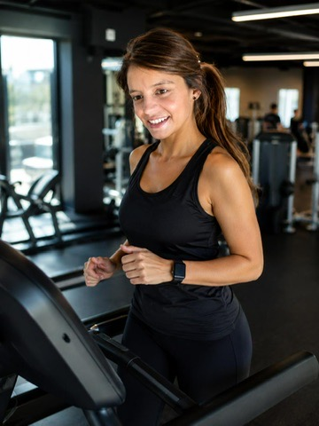

Workshops
Cozinha natural e funcional, com receitas sem glúten, sem lactose e sem açúcar processado.
Workshops & Experiências
A Pura Tita cria momentos presenciais pensados para transformar conhecimento em prática, sabor, comunidade e presença. Workshops, showcookings e experiências privadas podem ser adaptados a famílias, pequenos grupos, marcas e empresas.
Pedir proposta
Cozinha natural e funcional, com receitas sem glúten, sem lactose e sem açúcar processado.
Experiências sensoriais, práticas e educativas para marcas, grupos e comunidade.
Momentos personalizados para famílias, pequenos grupos ou ocasiões especiais.
Formatos que integram pessoas e animais numa lógica de cuidado e presença.
Formato
Objetivo, público, duração, tema e nível de personalização.
Receitas, produtos, mensagens, dinâmica e ambiente visual.
Experiência presencial com linguagem clara, sensorial e responsável.

Wellness
Para além da componente alimentar e educativa, a Pura Tita pode integrar experiências ligadas a movimento, bem-estar e estilo de vida saudável em ativações para grupos, marcas e empresas.